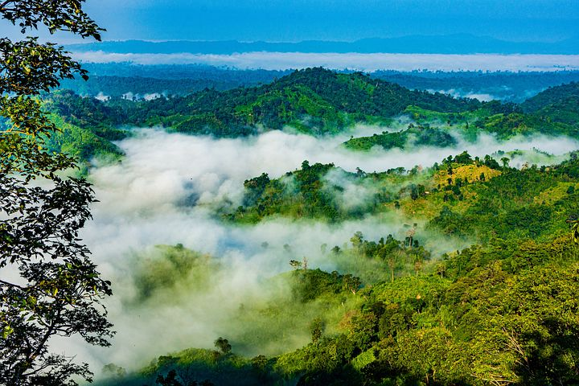
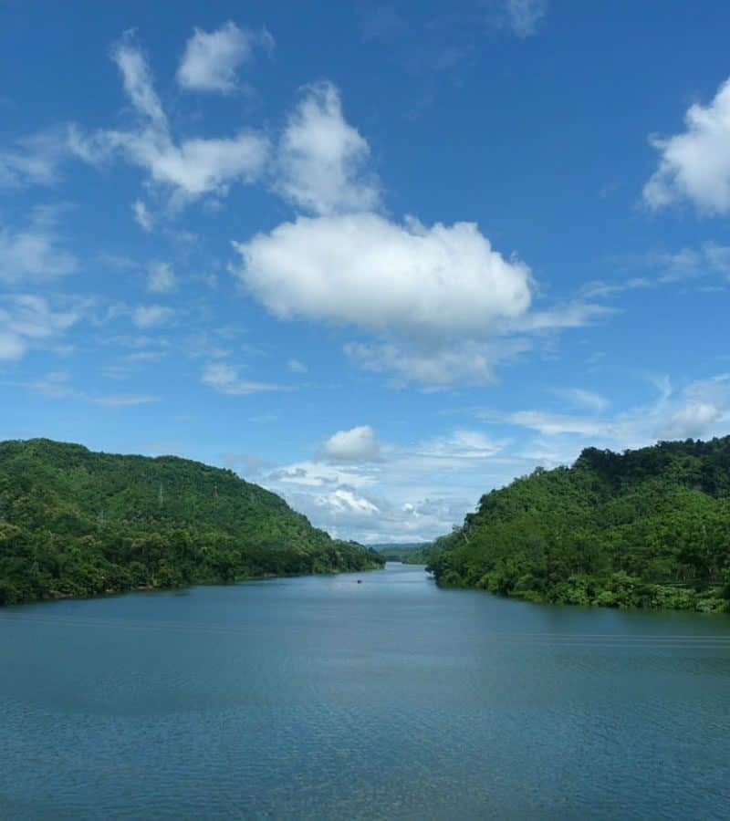
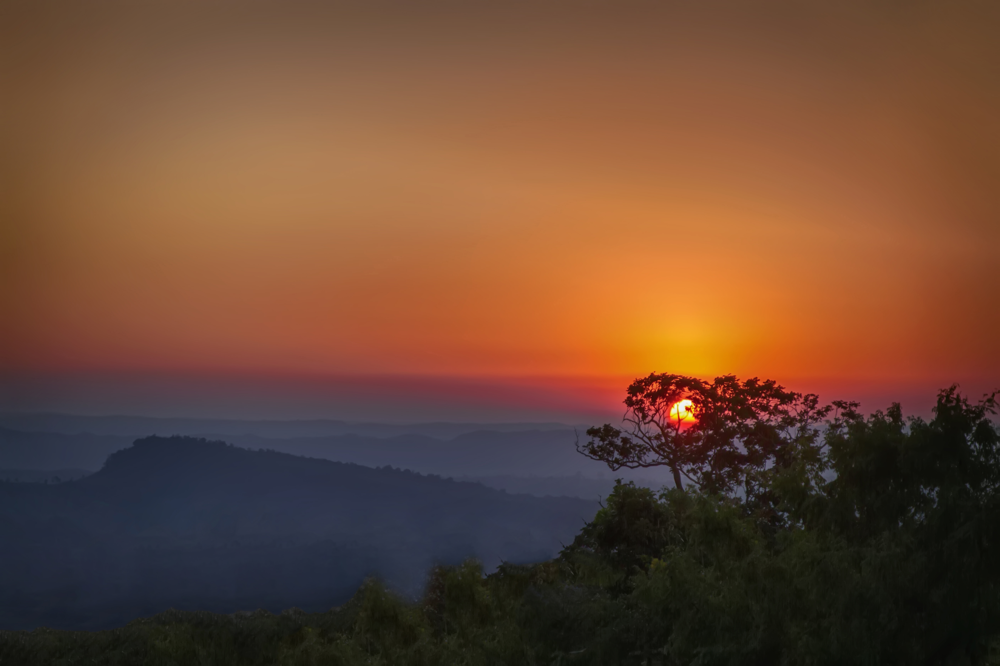

| |
Visit Bangladesh |
| Home | Cities | Sajek | Cox's Bazar | Sylhet | Masjids | Foods |
Sajek Tripuri Valley is one of the most popular tourist spots in Bangladesh situated among the hills of the Kasalong range of mountains in Sajek union, Baghaichhari Upazila in Rangamati District. The valley is 2,000 feet (610 m) above sea level.Sajek Tripuri Valley is known as the Queen of Hills and Roof of Rangamati.
The name of Sajek Valley came from the Sajek River that originates from Karnafuli river. The Sajek river works as a border between Bangladesh and India.
Sajek is a union located in the north of Chittagong Hill Tracts. It's under Baghaichori Upazila in Rangamati hill district, it is situated 67 kilometres (42 mi) north-east from Khagrachhari town and 95 kilometres (59 mi) north from Rangamati city. The border of Bangladesh and Mizoram of India is 8 kilometres (5.0 mi) east from Sajek.

Sajek valley is known for its natural environment and is surrounded by mountains, dense forest, and grassland hill tracks. Many small rivers flow through the mountains among which the Kachalong and the Machalong are notable. On the way to Sajek valley, one has to cross the Mayni range and the Mayni river. The road to Sajek has high peaks and falls.
